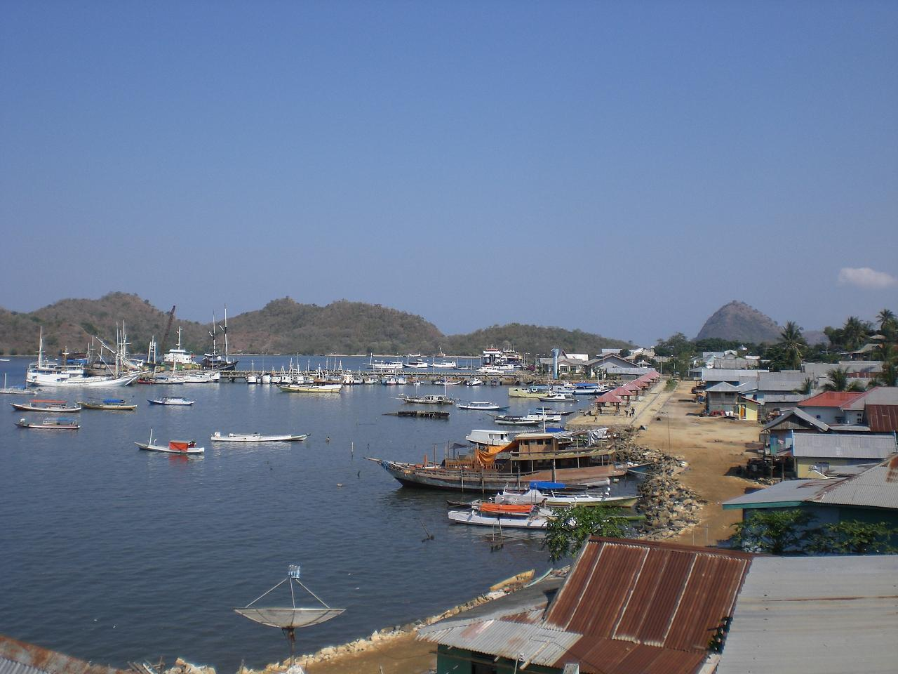

|  | Labuan Bajo adalah titik mula perjalanan ke Taman Nasional Komodo yang menyimpan banyak keindahan alam, diving spot terbaik, dan tentu saja satwa Komodo yang tidak ada duanya di muka bumi. Satu hal yang pasti: liburan ke Labuan Bajo akan memberikan kenangan yang tak terlupakan seumur hidup. Meski awalnya hanya merupakan desa nelayan, namun keberadaan Taman Nasional Komodo dan berbagai keindahan alamnya, membuat tempat ini menjadi tujuan wisata wisatawan domestik maupun internasional. Beberapa tempat menarik yang dapat dikunjungi di area Labuan Bajo adalah Bukit Cinta, Puncak Ameila dan Puncak Sylvia, Pantai Waecicu, Goa Batu Cermin, dan Goa Rangko. |